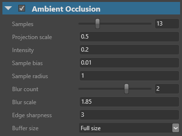

アンビエント オクルージョン
中級 アーティスト
Note
深度を使う他のポストエフェクトと同様に、アンビエント オクルージョンを有効にすると、MSAA（マルチサンプル アンチエイリアシング）が無効になります。
アンビエント オクルージョン（Ambient occlusion） は、角や隙間など、不透明な物体によって光が遮られた部分を暗く表現します。シーンに微妙な臨場感を与えたいときに使用します。
プロパティ

| プロパティ | 機能 |
|---|---|
| Samples | ある点がどの程度遮蔽されているかを判断するためにサンプリングされるピクセル数です。値を大きくするとノイズが減少しますが、パフォーマンスに影響します。Blur countと併用することで、結果とパフォーマンスのバランスをとることができます。 |
| Projection scale | サンプルの半径をスケーリングします。ほとんどの場合、1（スケーリングなし）が最も正確な結果を得ることができます。 |
| Intensity | 遮蔽された領域の、暗転効果の強さ。 |
| Sample bias | Stride がジオメトリのある領域を遮蔽とみなす角度です。値が高いと、狭いつなぎ目や隙間だけが遮蔽とみなされます。 |
| Sample radius | オクルージョンエフェクトの半径を調整するために、Projection scaleと併用します。 |
| Blur count | アンビエントオクルージョン画像をぼかす回数です。回数が多いほどノイズは減少しますが、アーティファクトが発生する可能性があります。 |
| Blur scale | ピクセル単位のぼかし半径です。 |
| Edge sharpness | オクルージョン領域の深度差をどの程度考慮してぼかしをかけるかを設定します。値を小さくするとより多くのぼかしがかかりますが、不要な部分（つまりオクルージョン領域を超えた部分）をぼかしてしまう可能性があります。 |
| Buffer size | アンビエントオクルージョンを計算する際の解像度です。計算結果はゲームの解像度にアップスケールされます。サイズを大きくすると良い結果が得られますが、メモリの使用量が増え、パフォーマンスに影響します。 |